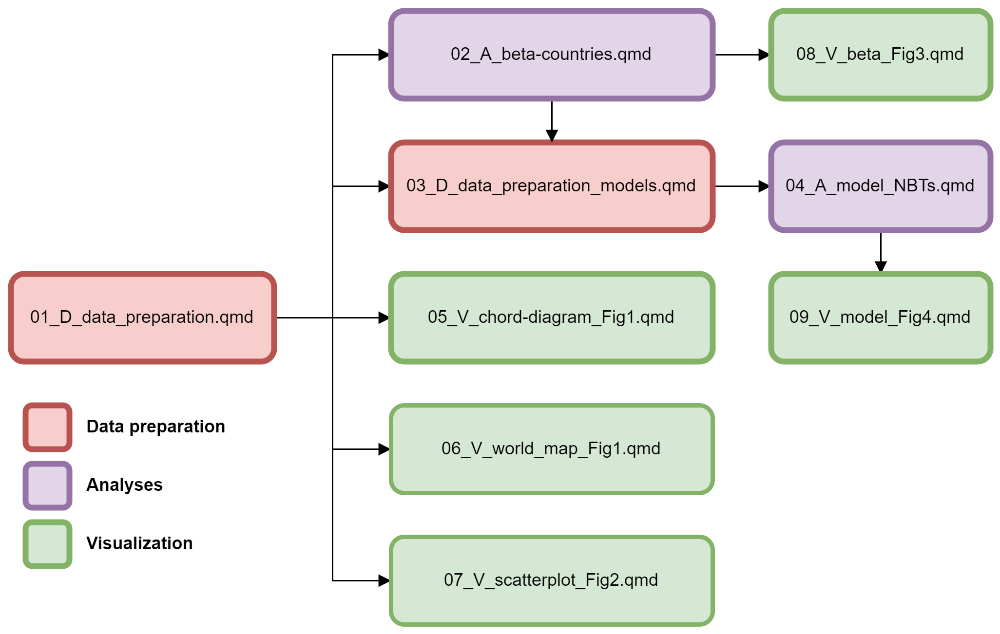

sessionInfo()
#> R version 4.3.2 (2023-10-31 ucrt)
#> Platform: x86_64-w64-mingw32/x64 (64-bit)
#> Running under: Windows 10 x64 (build 19045)
#>
#> Matrix products: default
#>
#>
#> locale:
#> [1] LC_COLLATE=Portuguese_Brazil.utf8 LC_CTYPE=Portuguese_Brazil.utf8
#> [3] LC_MONETARY=Portuguese_Brazil.utf8 LC_NUMERIC=C
#> [5] LC_TIME=Portuguese_Brazil.utf8
#>
#> time zone: Etc/GMT+3
#> tzcode source: internal
#>
#> attached base packages:
#> [1] stats4 stats graphics grDevices utils datasets methods
#> [8] base
#>
#> other attached packages:
#> [1] biscale_1.0.0 cowplot_1.1.1 patchwork_1.2.0.9000
#> [4] ggarrow_0.0.0.9000 rmapshaper_0.5.0 sf_1.0-14
#> [7] rnaturalearth_0.3.4 circlize_0.4.15 DHARMa_0.4.6
#> [10] bbmle_1.0.25.1 performance_0.12.1 glmmTMB_1.1.8
#> [13] ggplot2_3.5.0 scales_1.3.0.9000 countrycode_1.6.0
#> [16] phyloregion_1.0.8 readr_2.1.4 here_1.0.1
#> [19] glue_1.6.2 tidyr_1.3.1 dplyr_1.1.4
#>
#> loaded via a namespace (and not attached):
#> [1] DBI_1.1.3 phangorn_2.11.1 sandwich_3.0-2
#> [4] rlang_1.1.2 magrittr_2.0.3 multcomp_1.4-25
#> [7] predicts_0.1-11 e1071_1.7-13 compiler_4.3.2
#> [10] mgcv_1.9-0 vctrs_0.6.4 quadprog_1.5-8
#> [13] pkgconfig_2.0.3 shape_1.4.6 fastmap_1.1.1
#> [16] clustMixType_0.3-9 utf8_1.2.4 rmarkdown_2.26
#> [19] tzdb_0.4.0 nloptr_2.0.3 purrr_1.0.2
#> [22] xfun_0.43 reprex_2.0.2 jsonlite_1.8.8
#> [25] styler_1.10.2 terra_1.7-55 parallel_4.3.2
#> [28] R6_2.5.1 RColorBrewer_1.1-3 boot_1.3-28.1
#> [31] numDeriv_2016.8-1.1 estimability_1.4.1 Rcpp_1.0.11
#> [34] knitr_1.46 zoo_1.8-12 R.utils_2.12.2
#> [37] Matrix_1.6-2 splines_4.3.2 R.cache_0.16.0
#> [40] igraph_2.0.3 tidyselect_1.2.1 rstudioapi_0.16.0
#> [43] yaml_2.3.8 TMB_1.9.10 codetools_0.2-19
#> [46] curl_5.1.0 lattice_0.22-5 tibble_3.2.1
#> [49] withr_3.0.0 coda_0.19-4.1 evaluate_0.23
#> [52] survival_3.5-7 units_0.8-4 proxy_0.4-27
#> [55] pillar_1.9.0 KernSmooth_2.23-22 smoothr_1.0.1
#> [58] insight_0.20.2 generics_0.1.3 rprojroot_2.0.4
#> [61] sp_2.1-3 maptpx_1.9-7 hms_1.1.3
#> [64] munsell_0.5.0 minqa_1.2.6 xtable_1.8-4
#> [67] class_7.3-22 slam_0.1-50 emmeans_1.8.9
#> [70] tools_4.3.2 lme4_1.1-35.1 fs_1.6.3
#> [73] mvtnorm_1.2-3 fastmatch_1.1-4 grid_4.3.2
#> [76] ape_5.8 bdsmatrix_1.3-6 colorspace_2.1-0
#> [79] nlme_3.1-163 cli_3.6.1 fansi_1.0.6
#> [82] V8_4.4.0 gtable_0.3.4 R.methodsS3_1.8.2
#> [85] digest_0.6.33 classInt_0.4-10 TH.data_1.1-2
#> [88] htmltools_0.5.8.1 R.oo_1.25.0 lifecycle_1.0.4
#> [91] httr_1.4.7 GlobalOptions_0.1.2 MASS_7.3-60The macroecology of knowledge: Spatio-temporal patterns of name-bearing types in biodiversity science
Gabriel Nakamura ![]()
Lívia Estéfane F. Frateles
Bruno H. Mioto Stabile
Matheus Lima de Araujo
Emanuel Neuhaus
Manoela Maria Ferreira Marinho
Melina de Souza Leite
Aline Richter
Liuyong Ding
Tiago Magalhães da Silva Freitas
Bruno Eleres Soares
Weferson Júnio da Graça
José Alexandre Felizola Diniz-Filho
Note
This manuscript is submitted as a preprint here: Link
General overview
This repository contains the data and code used in the analysis of the manuscript entitled “The macroecology of knowledge: Spatio-temporal patterns of name-bearing types in biodiversity science”.
In this study we characterized different aspects of spatial and temporal patterns of fish Name Bearing Types (NBT) among countries and world regions. The characteristics comprises the number of total NBT, the NBT flowing among different world regions, the characteristics of regions and countries regarding the source of NBT in their biological collection, the level of underepresentation of native species and the level of overepresentation of non-native species for each country.
We discuss how the fundamental knowledge in fish species is distributed and its implications for science development and knowledge sharing.
Repository structure
data
This folder stores raw and processed data used to perform all the analysis presented in this study
raw
flow_period_region_country.csva data frame in the long format containing the flowing of NBT per regions per per time (50-year time frame). Variables:periodnumeric variable representing 50-year time intervalsregion_typecharacter representing the name of the World Bank region of the country where the NBT was sourcedcountry_typecharacter. A three letter code (alpha-3 ISO3166) representing the country of the museum where the NBT was sourcedregion_museumcharacter. Name of the World Bank region of the country where the NBT is housedcountry_museumcharacter. A three letter code (alpha-3 ISO3166) representing the country of the museum where the NBT is housednnumeric. The number of NBT flowing from one country to another
spp_native_distribution.csvdata frame in the long format containing the native composition at the country level. Variables:speciescharacter. The name of a species in the format genus_epithet according to the Catalog of Fishes (including synonym names)country_distributioncharacter. Three letter code (alpha-3 ISO3166) indicating the name of the country where a species is native toregion_distributioncharacter. The name of the region acording with World Bank where a species is native to
spp_type_distribution.csvdata frame in the long format containing the composition of NBT by country. Variables:speciescharacter. The name of a species in the format genus_epithet according to the Catalog of Fishes (including synonym names)country_distributioncharacter. Three letter code (alpha-3 ISO3166) indicating the name of the country where a species is housedregion_distributioncharacter. The name of the region acording with World Bank where a species is housed
bio-dem_data.csvdata frame with data downloaded from Bio-Dem containing information on biological and social information at the country level. Variables:countrycharacter. A three letter code (alpha-3 ISO3166) representing a countryrecordsnumeric. Total number of species occurrence records from Global Biodiverity Facility (GBIF)records_per_areanumeric. Records per area from gbifyearsSinceIndependencenumeric. Years since independence for each countrye_migdppcnumeric. GDP per capta
museum_data.csvdata frame with museums’ acronyms and the world region of each. Variables:code_museumcharacter. The acronym (three letter code) of the museumcountry_museumcharacter. A three letter code (alpha-3 ISO3166) representing a countryregion_museumcharacter. The name of the region acording with World Bank
processed
flow_region.csva data frame containing flowing of NBT among world regions and the total number of NBT derived from the source regionflow_period_region.csva data frame with the number of NBT between the world regions per 50-year time frame and the total number of NBT in each time frame for each world regionflow_period_region_prop.csva data frame with the number of NBT, the Domestic Contribution and Domestic Retention between the world regions in a 50-year time frameflow_region_prop.csvdata with the total number of species flowing between world regions, Domestic Contribution and Domestic Retentionflow_country.csvdata frame with flowing information of NBT among countriesdf_country_native.csvdata frame with the number of native species at the country leveldf_country_type.csvdata frame with the number of NBT at the country leveldf_endemic_beta.csvdata frame with values of native and NBT turnover at the country level using only species with restricted occurrences at the country leveldf_all_beta.csvdata frame with values of native and NBT turnover at the country level. This is used in the analysis of Supplementary material
R
The letters D, A and V represents scripts for, respectively, data processing (D), data analysis (A) and results visualization (V). The script sequence to reproduce the workflow is indicated by the numbers at the beginning of the name of the script file.

01_D_data_preparation.qmdinitial data preparation02_A_beta-countries.qmdanalysis of beta diversity metrics. This script is used to calculateturnover NBTandnative NBT03_D_data_preparation_models.qmdscript used to build data frames that will be used in statistical models (04_A_model_NBTs.qmd)04_A_model_NBTs.qmdstatistical models for the total number of NBT, native and NBT turnover, Domestic Contribution and Domestic Retention05_V_chord_diagram_Fig1.qmdcode used to produce circular flow diagram. This is the Figure 1 of the study06_V_world_map_Fig1.qmdcode used to produce the world map in the Figure 1 of the main text07_V_scatterplot_Fig2.qmdcode used to reproduce the Figure 2 of the main text08_V_beta_Fig3.qmdcode used to build Figure 3 of the main text09_V_model_Fig4.qmdcode used to build the Figure 4 of the main text. This is the representation of the results of the models present in the script 04_A_model_NBTs.qmd0010_Supplementary_analysis.qmdcode to produce all the tables and figures presented in the Supplementary material of this study0011_V_beta_all_FigS3.qmdcode to produce the Figure S3 in the supplementary material producing a cartogram with countries coloured accoridng to its native and NBT turnover values, considering all species
functions
function_beta_types_success_fail.Rfunction used to calculate turnover metrics.function_scale_back.Rfunction used to transform back normalized variables
output
Figures
In this folder you will find all figures used in the main text and supplementary material of this study
Fig1_flow_circle_plot.png Figure with circular plots showing the flux of NBT among regions of the world in a 50-year time window
Fig2_DC_DR.png Scaterplot with World regions characterized by their Domestic Contribution and Domestic Retention values in a 50-year time frame
Fig3_turnover_metrics.png Cartogram with 3 maps showing the level of native turnover, NBT turnover and the combination of both metrics in a combined map
Fig4_models.png Figure showing the predictions of the number of NBT, DC, DR, native turnover and NBT turnover for different predictors. This is derived from the statistical models
Supp-material
This folder contains the figures in the Supplementary material
FigS1_native_richness.pngWorld map with countries coloured according to the number of native species richness according to the Catalog of FishesFigS2_scatterplot.pngAll-time Domestic contribution (DC) and Domestic retention (DR) for world regions
Packages
| Package | Version | Documentation |
|---|---|---|
| bbmle | 1.0.25.1 | bbmle |
| betapart | 1.6 | betapart |
| biscale | 1.0.0 | biscale |
| circlize | 0.4.15 | circlize |
| countrycode | 1.6.0 | countrycode |
| cowplot | 1.1.1 | cowplot |
| DHARMa | 0.4.6 | DHARMa |
| dplyr | 1.1.4 | dplyr |
| ggarrow | 0.0.0.9000 | ggarrow |
| ggplot2 | 3.5.0 | ggplot2 |
| glmmTMB | 1.1.8 | glmmTMB |
| glue | 1.6.2 | glue |
| here | 1.0.1 | here |
| patchwork | 1.2.0.9000 | patchwork |
| performance | 0.12.1 | performance |
| phyloregion | 1.0.8 | phyloregion |
| readr | 2.1.4 | readr |
| rmapshaper | 0.5.0 | rmapshaper |
| rnaturalearth | 0.3.4 | rnaturalearth |
| scales | 1.3@420* | scales |
| sf | 1.0-14 | sf |
| tidyr | 1.3.1 | tidyr |
* Pull request 420 version
Contact
Gabriel Nakamura and Bruno Mioto
If you have any suggestion or commentary, please open an issue